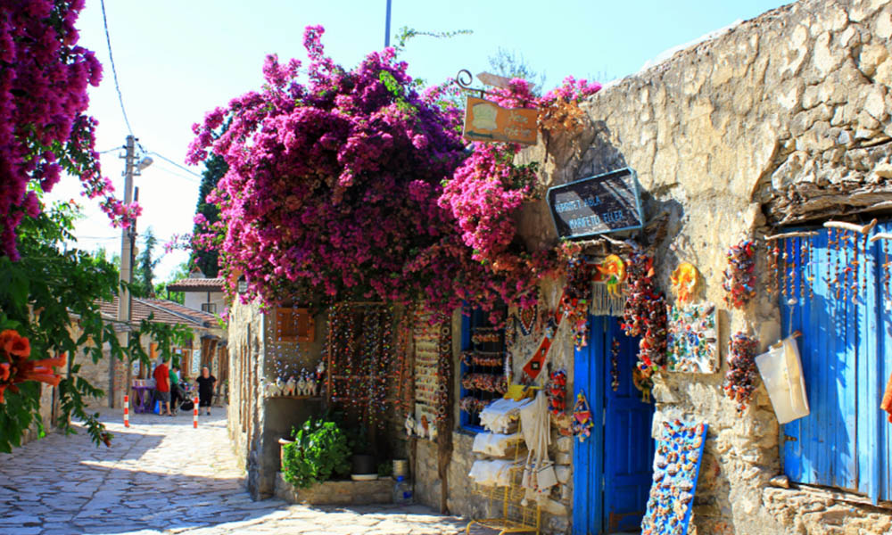
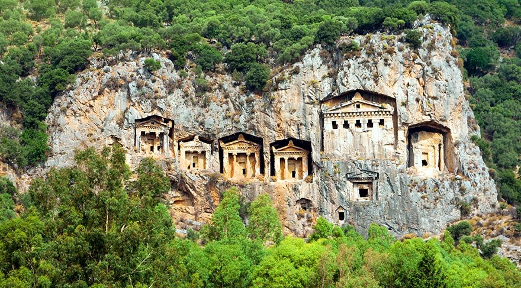

BODRUM
Ege’nin popüler tatil noktalarından biri olan Bodrum 215 kilometre uzunluğundaki muhteşem sahil şeridiyle
çok sayıda koya ev sahipliği yapıyor.
Gece hayatı ve eğlencenin hız kesmeden devam ettiği Bodrum’da, gün boyunca zaman geçirip hem denizin hem de
güneşin tadını çıkarabileceğiniz en güzel Bodrum koylarını şöyle sıralayabiliriz.
YALIÇİFTLİK KARGICAK KOYU
Bodrum Yalıçiftlik, Bodrum’da denizi en güzel koyların başında geliyor. Dalgasız ve temiz bir deniz yeter
diyorsanız, tesis konusunda beklentiniz yoksa bu koyu değerlendirebilirsiniz. Özellikle Kargıcak Koyu,
mutlaka görmeniz gereken güzellikte.
Adres: Kargicak Koyu, Yalı, Mumcular-Bodrum Yolu, 48401 Bodrum/Muğla
Puan: 4.8/5
GÖLTÜRKBÜKÜ CENNET KOYU
Göktürkbükü’nde yer alan Cennet Koyu tertemiz denizi ve kum plajıyla Bodrum’un bir başka önemli koyu olarak
listemizde yer alıyor. Denizi derin, sakin bir koy arıyorsanız tur teknelerinin de favorisi olan Cennet koyu
listenize eklemenizi öneriyoruz.
Adres: Göltürkbükü, Cennet Koyu Cd., 48483 Bodrum/Muğla
Puan: 4.7/5
YALIKAVAK KÜDÜR KOYU
Bodrum’un lüks adreslerinden biri olan Yalıkavak hem balık restoranları hem de temiz deniziyle öne çıkıyor.
Bakımlı limanıyla lüks yatların da tercih ettiği Yalıkavak’ta bulunan Küdür Koyu denize girmek için ideal
noktalardan bir diğeri. Hem özel plajlar hem de halk plajı olan koy, aynı zamanda doğal ve arkeolojik sit
alanı olarak işaretli.
Adres : Yalıkavak Küdür Koyu, Yalıkavak, 48990 Bodrum/Muğla
Puan: 4.6/5
AKYARLAR KARAİNCİR KOYU
Sığ, tertemiz ve dalgasız bir deniz için tek geçeriz diyebileceğimiz Karaincir Koyu, Akyarlar’da bulunuyor.
Bodrum’un güneyindeki bu harika koy sakin deniziyle çocuklu aileler için de ideal.
Adres: Karaincir Halk Plajı, Akyarlar, 48960 Bodrum/Muğla
Puan: 4.7/5
ORTAKENT YAHŞİ
Kalabalıktan kopmadan sosyalleşmek isteyenlerin tercih edebilecekleri Ortakent Yahşi Koyu temiz denizine
ilaveten hem kolay ulaşım avantajı hem de uygun fiyatlı tesisleriyle öne çıkıyor.
Adres: Yahşi Plajı, Ortakentyahşi, Bodrum-yalıkavak Yolu, 48420 Bodrum/Muğla
Puan: 4.7/5

FETHİYE
Muğla’nın batısında bulunan Fethiye ilçesi muhteşem koyları ile meşhurdur. Muhteşem bir deniz deneyimi
yaşamak için yirmiden fazla koy bulunmaktadır.
ÖLÜDENİZ-HİSARÖNÜ
Ölüdeniz’e yakınlığı ve Fethiye’nin eğlence merkezi olması ile Hisarönü tatilcilerinin vazgeçilmez uğrak
yerlerinden biridir. Fethiye ile Ölüdeniz arasında kalan Hisarönü ve komşusu Ovacık, son yıllarda yerleşim
ve konaklama açısından oldukça gelişmiş bir bölge haline gelmiştir.
Yerli turistlerin ilgisini çektiği kadar, yabancı turistlerin de ilgisini çekmektedir. İngilizler başta
olmak üzere, burada kendilerine ev, villa, arazi alanlar, hatta aralarında iş yeri açanlar da bulunmaktadır.
Çok sayıda restaurant, bar, disko, giysi ve takı satış mağazaları ve günübirlik tur düzenleyen şirketlerin
ofisleri burada mevcuttur. Hisarönü merkezinde birkaç cadde, toplu bir eğlence merkezine dönüşmektedir.
Özellikle gece 12’den sonra mekanların iç kısımları diskoya dönüşüyor.
GEMİLE KOYU- ANTİK AYA NİKOLA
Ada üzerinde Bizans İmparatorluğu döneminden kalma 4-5 adet kilise kalıntıları bulunuyor. Bu bölge
Hristiyanlığın ilk yayılma merkezlerinden biri olması sebebi ile batı dünyasında oldukça önemli bir yer
olarak görülüyor. Antik dönemde buranın ismi Aya Nikola (Aziz Nikola, St.Nicholas) imiş. Adanın hemen
karşısında, Gemile Koyu (Gemiler Koyu) ve plajı bulunuyor. Gemile Vadisi (Gemiler Vadisi) ile birlikte bir
doğa harikası oluşturuyor.
OYUKTEPE KOYLARI
İlçedeki iki büyük tatil köyünün de yer aldığı yarımadada; Mempaşa, Küçük Samanlık, Büyük Samanlık,
Boncuklu, Kuleli Aksazlar, Akvaryum, Turunç Pınarı gibi koylar bulunmaktadır. Kamp kurmak ve doğa ile iç içe
zaman geçirmek isteyenler, ağaçların gölgesinde doğayı yaşayıp, berrak sularda denize girebilirler.
Koylarda, orman içi dinlenme alanlarında bir çok imkan sağlanmaktadır.
ÖLÜDENİZ-OVACIK
Denize çok yakın olmasına rağmen, harika bir dağ manzarası vardır. Fethiye’den daha serin ve nem oranı daha
düşük olduğu için, bir eğlence ve yerleşim merkezi haline gelmiştir. Eğlence mekânları, kiralık villaları,
özellikle muhafazakar kiralık villalar, otelleri, alışveriş yerleri ve restoranların bolca bulunan bu yerde
doğa yürüyüş alanları, yamaç paraşütü gibi spor aktivitelerini organize eden mekanlar bulabilirsiniz.
KABAK KOYU
Ulaşım zorluğu nedeni ile kirletilmemiş ve doğal güzelliğini muhafaza edebilmiş bir bölgedir. Üç tarafı
dağlarla çevrili kanyon biçimindeki bu yeşil vadinin arasına saklanmış kamp yerleri vardır. Kamplarda çam
ağaçlarının içinden deniz manzarasını seyretmek ve kamplarda çalınan seçkin müziklerin ritmiyle, güneşin
eşlik ettiği güzel bir atmosfer oluşturuluyor.
KELEBEKLER VADİSİ
Tekneniz kıyıya demir attıktan sonra dönülmez bir yere indiğinizi fark edeceksiniz.Gün ışığı, Akdeniz
sularını safir mavisinden yeşilimsi maviye çevirirken, Kelebekler Vadisi’ni çevreden yalıtan yüksek
kayalıkların üzerine gölgeler düşürüyor.

DATÇA
Strabon'un, "Tanrı çok sevdiği kulunu uzun ömürlü olsun diye Datça Yarımadası'na gönderir" diye bir sözü
vardır. Ne kadar da doğru bir söz olduğunu anlamak hiç de zor değil. Zira Datça'nın her bir köşesi, denizi
ve soluduğunuz havası size bunu kanıtlar nitelikte. Marmaris'ten yaklaşık 2 saat süren ve çam ağaçlarıyla
kaplı dar ve mıcırlı yollar insanı biraz ürkütüyor ancak yolun sonunda Datça belirince, içinize dolan
huzurun tarifi mümkün değil. Burası sadece doğanın ve tarihin değil, aynı zamanda sanatın da vuku bulduğu
bir yer.
ESKİ DATÇA
Datça'da nerelere gidilir diye merak ettiğinizde ilk durağınız Eski Datça olmalı. Datça Merkez'e giderken
sağ tarafta beliren Eski Datça tabelasına saptığınızda şıp diye karşınıza çıkan, taş sokakları ve kendine
özgü mimarisi ile karşınızda beliren yer. Can Yücel'in yaşadığı Can Evi ve Can Yücel Sokak da burada
bulunuyor. Ne yazık ki Can Yücel'in evi ziyarete açık değil, hatta eşi ve kızı hala daha bu evde
oturduğundan kapıyı zorlamamanızı rica ediyoruz. Zaten kapıda bir uyarı da yazıyor. Her yılın 12
Ağustos'unda düzenlenen Can Yücel'i Anma Töreni ve Sanat Festivali kapsamında, saat 15:00-17:00 arası, evin
sadece Can Yücel'in kitaplarının sergilendiği bölümü ziyarete açılıyor. Eski Datça, Datça'da görmeniz
gereken yerlerin başında geliyor.
KNİDOS ANTİK KENTİ
Eğer antik kentlere karşı bir zaafınız varsa ve Knidos'tan önce çok antik kent gördüyseniz, burası sizi pek
fazla etkilemeyecektir. Antik tiyatronun küçük bir kısmı ayakta kalmış ve şu an o kısma
girişe izin de verilmiyor. Ancak doğası ve denizi gerçekten efsane derecede güzel. Hatta antik kenti
gezdikten sonra 3-4 tane yüzülecek yer de bulunuyor Knidos Antik Kenti'nin yanında. Deniz oldukça durgun ve
berrak. Küçük bir uyarı; yanınıza yiyecek, içecek gibi şeyler götürün. Çünkü antik kentin orada yalnızca tek
işletme var ve fiyatlar dudak uçuklatıyor.
KUMLUK PLAJI
Kumluk Plajı, Datça Merkez'in göbeğinde yer alan küçük ve belki de Datça'nın tek kum plajı. Limanın orada
bulunuyor. Plajın arkası yığınla restoran dolu. Gündüzleri işletmelere ait olan şezlong ve şemsiyeler,
akşamları yerini masa ve sandalyelere bırakıyor. Dilerseniz rakı-balık, dilerseniz de daha soft bir şeyler
yiyebilirsiniz. Datça genel olarak pahalı bir yer olduğu için, bu
anlamda hazırlıklı olmanızda fayda var.
MESUDİYE
Datça'nın merkezine yaklaşık 20-30 dakikalık mesafede olan Mesudiye, içerisinde barındırdığı bükleri ve
küçük küçük köyleri ile adeta bir cennet misali. Bu büklerin en ünlüleri ise sırasıyla Kızılbük, Hayıtbükü,
Ovabükü ve Palamutbükü. Daha sakin ve huzurlu bir ortamda denize girebilmek için bu büklerden birinde
konaklamayı tercih edebilirsiniz. Ovabükü ve Kızılbük, diğer iki büke göre en sakin olanları. Kızılbük'te
bir tane tesis bulunuyor, dolayısıyla tüm koy size ait. Ovabükü'nde de baştan sona pansiyon ve apart oteller
mevcut ancak oldukça büyük bir koy olduğundan dolayı yine o sakinliği hissedebiliyorsunuz. Hayıtbükü ile
Palamutbükü ise en popüler olanları. Hayıtbükü daha küçük ve inanılmaz kalabalık. Palamutbükü ise en büyüğü.
Daha çok otel ve restoran bulabilirsiniz burada. Hepsinin ortak noktaları ise; deniz muhteşem ötesi.
DEVEBOYNU FENERİ
Burası Datça Yarımadası'nın en uç noktası. Datça'ya gelenlerin çoğu bu olağanüstü deniz fenerini sadece
uzaktan izlemekle yetiniyor ne yazık ki. Çünkü Deveboynu Feneri'ne çıkmak oldukça zahmetli ve biraz zaman
gerektiren bir şey. Oldukça dar bir patikadan yürümeniz, kimi zaman da bayır çıkmanız gerekiyor. Ancak öyle
bir manzara karşılıyor ki sizi, çok az yerde rastlayacağınız cinsten. Sarp kayalıkların üzerinde duran
Deveboynu Feneri, karşısında Kos Adası, arkasında Knidos Antik Kenti, bir tarafında Akdeniz, diğer tarafında
Ege Denizi ile gerçekten de kusursuz bir şölen yaşatıyor sizlere.

AKYAKA
AZMAK NEHRİ
Gökova Körfezi’nin incisi Akyaka ise Akyaka’nın incisi de Azmak Nehri’dir. Gökova Körfezine dökülen Kadın
Azmağı Deresi (Akyaka Azmak Nehri), su samurundan deniz kaplumbağasına kazlardan ördeklere onlarca hayvan ve
bitki türüne ev sahipliği yapıyor.
Azmak Nehri’nin suyu buz gibi. Yazın buraya yolunuz düşerse Azmak Nehrine girmeden asla Akyaka’dan dönmeyin.
Ayrıca nehirde tekne turu da yapabilirsiniz.
Azmak Nehri’nin Hikayesi:
Azmak Nehri’nin asıl adı Kadın Azmağı’dır. Peki neden bu nehre Kadın Azmağı demişler. Azmak Nehri’nin su
akıntısı çok kuvvetli. Nehrin debisinden kaynaklı akıntı hızından dolayı azmak adı buradan gelmiş.
Akyaka’nın eskiden şebeke suyu olmadığı için Akyakalı kadınlar çamaşırlarını Azmak’ta yıkarmış. O nedenle
buraya zamanla Kadın Azmağı denilmiş.
HALK PLAJI
Akyaka Plajı, Azmak Nehri ve Ege Denizi’nin buluştuğu yerde bulunuyor. Burası gerçekten efsane güzellikte
bir plaj. Özellikle burada gün batımını kesinlikle izlemelisiniz. Eğer güneş kızıl rengini verirse değmeyin
keyfinize. Unutmayın Akyaka gün batımı, Akyaka Plajı’ndan izlenir. Burada güneş Gökova Körfezi üzerinden
batarken resmen gösteri yapıyor.
ORMAN KAMPI
Akyaka Plajı’ndan sahili takip edip yolun sonundaki merdivenlerden Akyaka Orman Kampına yürüyerek
ulaşabilirsiniz. Ayrıca bahsettiğim merdivenlerden Gökova Körfezi’nin manzarasını yakalayabilirsiniz. Yürüme
dışında Akyaka – Akbük yolundaki kamp girişinden araç ile kampa giriş yapabilirsiniz. Çadır kurup yürüme
mesafesindeki tüm koyların keyfini çıkarabilirsiniz.
72 MERDİVEN KOYU
Akyaka Orman Kampı sınırları içinde kalan 72 Merdiven Koyu, 72 tane dik ve dar bir merdivenle inilen küçük
ve özel bir koy. Akyaka’daki diğer koy ve plajlar gibi bu koyun da manzarası çok güzel. Gökova Körfezi eşsiz
güzelliği kendini burada da gösteriyor.
72 Merdiven Koyu’nda deniz turkuaz renginde. Suyun alt kısmı ılık, yüzey kısmı ise üst akıntı olmasından
dolayı soğuk. Burada denize küçük bir beton platform üzerinden giriliyor. Sonradan buraya tahta bir
platform yapmıldı. Tam sandalye atıp keyif yapmalık. Ağaçlar da doğal
şemsiye. Gel keyfim gel durumu.
ALBAY KOYU
Albay Koyu, Akyaka Orman Kampı sınırları içerisinde kalıyor. Albay Koyu’nda deniz biraz dalgalı. İyi yüzme
bilmiyorsanız bu koyda denize girmemelisiniz. Burada yapılacak en güzel şey tahta platformun üstüne sandalye
atıp manzara eşliğinde keyif yapmak. Bu koyda kendinizi çok özel hissedeceksiniz, çünkü Albay Koyu küçük,
özel, sanki size tahsis edilmiş bir yer izlenimi veriyor.
Albay Koyu'nun Hikayesi:
Albay Koyu hakkında birçok rivayet bulunmakta; Rütbesi albay olan bir asker çok kıskançmış ve eşinin
kalabalık bir yerde denize girmesine izin vermiyormuş. Albayın eşi ancak bu koyda albayın askerlerinin
denize arkaları dönük dizilmesi ile yüzebiliyormuş. Başka bir rivayete göre de albay çok sevdiği oğlunu
ansızın kaybetmiş ve bu acıyla koya gelip burada kalmaya başlamış.
Albay Koyu’nun gerçek hikayesine gelince; Albay, 1950’lerden beri oğlunu alıp bu bölgede kamp kurarmış.
Albay sürekli bu bölgede kalınca halk tarafından burası Albay Koyu olarak anılmaya başlanmış.
BURUN KOYU
Akyaka Burun Koyu, Albay Koyu’ndan hemen sonra geliyor. Patika yollarla bu koya kolayca ulaşabilirsin. 72
Merdiven Koyu - Albay Koyu - Burun Koyu ve Akvaryum Koyu hemen peşi sıra dizilmiş koylar. Tabela yok ama
buraları kolayca bulabilirsiniz.
Gökova Körfezi manzaralı Burun Koyu ismini sağ kısmında buruna benzeyen çıkıntıdan alıyor. Burada bulunan
tahta platformlar oldukça güzel. Eskiden kayalık olduğu için tehlike arz edebiliyordu.
Burun Koyu’nda denize girebileceğiniz birden fazla merdiven bulunuyor. Deniz burada derin ve zaman zaman
dalgalı olabiliyor. İyi yüzme bilmiyorsanız bu koyda denize girmemelisiniz. Gelirken yiyecek, içecek ve
sandalye konusunda hazırlıklı gelebilirsiniz çünkü burada herhangi bir bir tesis yok. Ancak merkeze yürüme
mesafesi olduğundan sıkıntı yaşamazsınız.
AKVARYUM KOYU
Akyaka’daki bir diğer bakir koylardan biri olan Akvaryum Koyu hemen Burun Koyu’ndan sonra geliyor. Bu koy
Akyaka Orman Kampındaki taş evlerin hemen altında bulunuyor. Yukarıdaki 3 koyla beraber toplamda bu 4 koyun
yapısı birbirine benziyor. Eğer biri kalabalıksa diğer koyda şansınızı deneyebilirsiniz.
MADEN İSKELESİ
Akyaka Orman Kampından hemen sonra gelen Maden İskelesi Akyaka’ya göre daha sakin bir yer. Akyaka’nın
kalabalıklığından sıkılırsanız ya da daha tenha bir yerde denize girmek isterseniz buradaki iskeleden denize
girebilirsiniz.
IDYMA KALESİ
Gökova Köyü’nün üzerindeki tepede kurulmuş olan Idyma Antik Kenti’nin M.Ö. 3 ve 4. yy. dan günümüze ulaştığı
tahmin ediliyor. Kıran Dağı yamaçlarına kadar uzanan antik kentte kayalara oyulmuş birçok mezar bulunuyor.
Bir ev tarzında yapılan kaya mezarlar ölenlerin sonraki hayatlarında yaşayacakları evler olarak tasvir
edilmiş.
Idyma Kalesi kaderine terk edilmiş bir vaziyette. Antik yapılara merakınız varsa bu harabeyi gezebilirsiniz.
Antik kentte ayakta kalabilmiş yapı yok denecek kadar az.
SEYİR TEPESİ
Akyaka gezilecek görülecek yerler listesine manzarası en efsane yer ile devam ediyoruz. Sakar Seyir Terası,
sadece Akyaka Değil Muğla’da en güzel manzarayı size sunan yerdir. Burada sanki uçuyormuşsunuz gibi hisse
kapılıyorsunuz. Biraz daha yükselseniz bulutlar sanki elinizde.
ÇINAR PLAJI
Çınar Plajı Akyaka’ya sadece 4 km uzaklıkta bulunuyor. Burası Ölüdeniz’e çok benziyor ve Ölüdeniz’in
minyatürü gibi. Çınar Plajı’nın doğası gerçekten inanılmaz güzel. Çınar Plajı’nda deniz yer altı sularıyla
birleştiği için deniz suyu biraz soğuk. Plaj küçük taşlardan oluşuyor. Ayrıca küçük bir Azmak da var.
TURNALI KOYU
Turnalı Koyunda sizi inanılmaz güzel bir deniz bekliyor. Akyaka’nın kalabalıklığından sıkıldıysanız ve
masmavi bir denize girmek istiyorsanız burası ideal. Sessiz sakin enfes bir manzaraya sahip Turnalı Koyu,
yazın bile çok kalabalık olmuyor.
Burada işletme tarzı bir yer yok. Sadece köylü ablalar ayran gözleme gibi birkaç yiyecek satıyor. Son olarak
Akyaka’da kamp yapmak isterseniz burası kamp için de oldukça ideal. Kendi çadırınız olması şartıyla burada
güzel bir kamp yapabilirsiniz.
AKBÜK KOYU
Cam gibi bir deniz, masmavi sular ve enfes bir manzara. Akbük, Akyaka gezilecek yerler listesinin parlayan
yıldızıdır. Akbük Koyu, Akyaka merkeze 25 km uzaklıkta bulunuyor. Akbük Plajı’nın denizi akvaryum gibi
burada balıklarla beraber yüzüyorsunuz.
SARIDANA KOYU
Denizi oldukça sığ olan bu güzel koy tam piknik yapmalık. Ağaçlar denize oldukça yakın konumda olduğundan
yazın bu koyda gölgenin ferahlığını yaşayabiliyorsunuz.

MARMARİS
Kristal berraklığındaki masmavi deniziyle öne çıkan Marmaris, birbirinden güzel koyları ve muhteşem
plajlarıyla unutulmaz bir yaz tatiline zemin hazırlıyor. Marmaris Merkez’den İçmeler’e kadar uzanan yaklaşık
10 km uzunluğundaki sahil şeridi boyunca, halk plajları, özel plajlar, oteller, kafeler ve restoranlar yan
yana diziliyor.
MARMARİS HALK PLAJI
Marmaris merkeze en yakın plajı olan Marmaris Halk Plajı, aynı zamanda Marmaris’in en çok tercih edilen, en
popüler plajı. İleride Uzunyalı Plajı’na kadar uzanan Marmaris Halk Plajı, ücretsiz olduğundan merkez ve
çevresinden çok sayıda ziyaretçi alsa da yumuşak kumsalı ve temiz denizi ile Marmaris’te denize girilecek en
güzel yerler arasında kendine yer ediniyor.
UZUNYALI PLAJI
Uzunyalı Plajı, Marmaris Halk Plajı’ndan hemen sonra başlar ve İçmeler’e kadar uzanan yaklaşık 10 kilometre
sahil şeridi boyunca devam ediyor. Sahil boyunca farklı zevklere uygun restoranlar ve kafelerin yanı sıra
mayo, deniz gözlüğü, deniz havlusu gibi ihtiyaçlarınızı satın alabileceğiniz birçok dükkan da hizmet
veriyor.
İÇMELER KOYU
Marmaris merkeze 8 km uzaklıktaki İçmeler Koyu, Marmaris’in için bölgenin en popüler plajı denebilir. Gün
boyu Marmaris Merkez’den İçmeler’e minibüslerle yaklaşık 10-15 dakika içinde ulaşım sağlanabiliyor. Altın
rengi ince kumlu kumsalı ve berrak mavi sularıyla ünlü İçmeler Plajı, tam 6 km uzunluğa sahip. Bu tertemiz
sularda, jet ski, muz, parasailing gibi su sporu ekipmanlarını kiralayarak tatilinize heyecan
katabilirsiniz. İçmeler Otelleri’nde konaklarken, bu muhteşem plajın tadını doyasıya çıkarabilirsiniz.
TUTUNÇ KOYU
Marmaris merkeze 21 km uzaklıkta yer alan Turunç Plajı, Marmaris’teki Mavi Bayraklı plajlardan biri. Daha
kısa bir sahil şeridine sahip olan Turunç Koyu, çam ormanlarının gölgesinde kalabalıktan uzak, huzurlu bir
atmosfer sunuyor.
Turunç’a ulaşım virajlı yollarla sağlandığından Turunç Otelleri’nde ve Turunç Apartları’nda konaklayan
misafirler denize girmek için başka koyları pek tercih etmiyor. Turunç Koyu’na kadar gelmişken civardaki
Amos Koyu’na uğrayabilir, burada Amos Antik Kenti’ni gezerek gününüze renk katabilirsiniz.
KLEOPATRA PLAJI
Marmaris’ten günübirlik turlarla gidilen Sedir Adası’nın kıyısında yer alan, Kleopatra Plajı yumuşacık altın
kumları ve pırıl pırıl deniziyle görenleri kendine hayran bırakıyor. Sedir Adası’nda yer alan Kedrai Antik
Kenti, geçmişteki ihtişamlı günlerin izlerini taşıyan kalıntılarıyla Marmaris tatilinize renk katacak en
özel mekanlardan biri.
MARMARİS'İN DİĞER POPÜLER PLAJLARI
- Orhaniye Plajı
- Kızkumu Plajı
- Kumlubük Plajı
- Günnücek Plajı
- Cennet Adası Plajı
MARMARİS KALESİ
Bir liman şehri olarak kurulan Marmaris’i tehlikelerden koruyan ve gözeten Marmaris Kalesi, Marmaris
Merkez’de gezilecek tarihi yerlerin başında geliyor. Milattan Önce inşa edildiği ve ilerleyen dönemlerde
yeni bölümler eklenerek genişletildiği tahmin edilen Marmaris Kalesi’ne, Kanuni Sultan Süleyman döneminde,
1522 Rodos seferi öncesi yeni kuleler, surlar ve burçlar eklenmiş. 1991 yılında kalenin içinde ziyarete
açılan Marmaris Müzesi ise 2 arkeoloji salonu ve 1 etnografya salonu ile Marmaris’in tarihine ışık tutuyor.
KNİDOS ANTİK KENTİ
Datça Yarımadası’nın en uç kısmında, Ege ve Akdeniz’in birleştiği noktada kurulan Knidos, Batı Anadolu’nun
en önemli liman kentlerinden biri oldu. Rodos Birliği’ne bağlı olan ve ticaretle gelişen Knidos, askeri ve
ticari olmak üzere iki limana sahipti.
Bu zengin ve ihtişamlı antik kentte iyi korunmuş ve büyük kısmı günümüze ulaşmış olan Dor Tapınağı, Apollon
Tapınağı ve Sunağı, Yuvarlak Tapınak ve Sunağı, Meclis Binası, Korinth Tapınağı, mevsimi ve zamanı gösteren
güneş saati, Tiyatro, Dionysos Tapınağı ve Stoası, Yamaç Evleri ve Odeon kalıntılarını görebilirsiniz.
MARMARİS MARİNALARI
Marmaris’te yatlara ve özel teknelere liman olan farklı kapasitelerde marinalar bulunuyor. Marmaris merkeze
en yakın marina ise 750 kat kapasitesine sahip olan Netsel Yat Marinası. Marmaris’te demirleyen yatların
kolayca alışveriş noktalarına ulaşabileceği, yat için ihtiyaç duydukları birçok ekipmanı ve tamir
hizmetlerini sağlayabilecekleri yatçılık firmaları da burada hizmet veriyor.
MARMARİS AQUAPARKLARI
Yaz tatilinin olmazsa olmazı, her yaştan tatilciye suyun en eğlenceli halini yaşatan aquparklar yani su
parkları. Marmaris tatilinin bir gününü doyasıya eğlenerek geçirmek isteyen minikler ve büyümeyen çocuklar
için Marmaris aquaparkları biçilmiş kaftan.
TEKNE TURLARI
Ege’nin denizle iç içe coğrafyasında özel bir konuma sahip olan Marmaris’te birçok koy ve ada bulunuyor.
Marmaris koylarını dolaşan günübirlik Marmaris turlarının yanı sıra Marmaris-Rodos günlük turları düzenleyen
tekneler de bulunuyor.

KÖYCEĞİZ
KÖYCEĞİZ GÖLÜ
Köyceğiz İlçesi’nin hemen yanı başında yer alan Köyceğiz Gölü, burada görülmesi gereken yerlerin en başında
gelmektedir. Gölün derinliği 1 - 1.5 metre arasında değişkenlik gösterir. Suyu kükürtlü olduğundan acı bir
tadı vardır. Gölde çeşitli balık türleri vardır. Gölün üstünde ufak bir ada göze çarpar. Adada bulunan bu
kalıntılar hapishane olarak Cenevizliler zamanında kullanılan tarihi bir binaya aittir. Köyceğiz’de Mutlaka
Görmeniz Gereken Yerler! Hapishaneden dolayı buraya Hapishane Adası ’da denilmektedir. Gölün bir başka
özelliği ise bağlandığı kanallardır. Örneğin Dalyan, Dalyan kanalı ile Köyceğiz’e bağlanmaktadır. Adanın bir diğer
bilinmeyen özelliği ise Nil kaplumbağalarının yaşam alanı olmasıdır.
SULTANİYE KAPLICALARI
Sultaniye Kaplıcaları Sultaniye Kaplıcaları, KöyceğizGölü’nün güney tarafında kalmaktadır. Şifa dağıtan bu
kaplıcaların özellikle romatizma hastalıklarına, siyatik, cilt ve kadın hastalıklarına iyi geldiği
söylenmektedir. Sultaniye kaplıcaları ülkenin en yüksek radyoaktiviteye sahip kaplıcaları olarak ilk sırada
yer almaktadır. Suyun sıcaklığı 39 derece ölçülmüştür. Suyun bileşiminde kalsiyum, sülfür, radon, sülfat ve
klorür kimyasalları bulunmaktadır. Kaplıcalarda sular hem soğuk hem de sıcaktır. Kaplıcaların tarihi çok
eskilere dayanmaktadır. 2000 yıl önce Kaunos halkı tarafından bu kaplıcaların yapılmış olduğu tahminler
arasındadır. Muğla Burası Roma zamanında 400 tane hastaya ev sahipliği yapan bir hastane olarak
kullanılmıştır. Bu kaplıcalar Roma, Bizans, Selçuklu ve Osmanlı zamanlarında da kullanılmıştır.
KAUNOS ANTİK KENTİ
Karia’nın en önemli ticaret şehirlerinden biri olan Kaunos Antik Kenti, Karia ve Likya şehirlerinin sınır
bölgesinde bulunmaktaydı. Bu antik kentin ne zaman ve kimler tarafından kurulduğuna dair net bilgiler
bulunmamaktadır. Roma ve Bizans dönemlerinde siyasi açıdan
herhangi bir öneme sahip olmamışsa da liman kenti olmasından dolayı ticari üstünlüğünü her zaman korumuştur.
Antik kent ile deniz arasında ki bölge bataklık olduğundan deniz ticareti zorlukla oluyormuş bundan dolayı
bölge halkı kendilerince bazı önlemler almış. M.S.1. yüzyıldan sonra çayın sürükleyerek getirdiği alüvyonlar
yüzünden liman dolmuştur. Bu durum kentin öneminin yitirilmesine sebep olmuştur. Dalyan’dan tekne ile buraya
geldiğiniz zaman kayaların içine oyulmuş mezarlar sizi karşılar.
Mezarlar iki sıra şeklinde yapılmıştır. Üsteki yapıların cepheleri tapınak şeklinde, alttaki yapılar ise
sadedir. Gömüt olarak kullanılmış olan odalarda ölülerini koydukları taş sekileri görebilirsiniz. Güney
tarafta bulunan akropolisin yer aldığı tepenin doğusu çok sarptır. Köyceğiz Gezilecek Yerler. Tepenin kuzey
tarafında kalan surların yüksekliği 152 metreyi bulur. Dalyan’ın kuzey tarafına doğru gittiğiniz zaman
burada orta çağdan kalma bir kale olduğunu görürsünüz. Bu kale kulelerle destek verilmiş surlar ile
çevrilmiştir.
YUVARLAK ÇAY
Yuvarlakçay Muğla İl’inin soğuk çayı olarak bilinen Yuvarlak Çay Köyceğiz ve Ortaca arasında kalmış olan
Topgözü Kanyonunda bulunmaktadır. Yuvarlak Çay Sandras Dağından gelen kar suları ile beslenmektedir. Serin
ve harika bir doğa güzelliğine sahip olan bu güzel yer özellikle yöre halkın yazın dinlenmek için geldiği
yerlerden biridir. Oldukça soğuk bir suya sahip olan çay, yazın sıcaktan bunalanlar için eşsiz bir fırsat
sunmaktadır. Alabalık üretimiyle ünlü olan bu yer ülkemizde ilk sıralarda yer almaktadır.
TOPARLAR ŞELALESİ
Köyceğiz’de bulunan toparlar şelalesi Antalya yolu üstünde yer almaktadır. Yalnız buraya gelirken biraz
dikkat etmek gerekir. Çünkü burayı tarif eden tabela ufak olduğundan görmeden geçebilirsiniz. İçeri doğru
yol alırken insanı sık çam ağaçları ve suyun sesi karşılıyor. Yürüyüş yapmak için spor ayakkabısı mutlaka
yanınızda bulundurmanız gerekiyor. İlk şelaleyi gördükten sonra gezmenize devam etmeyi isteyeceksiniz.
Gördüğünüz muhteşem doğa manzarası size buna mecbur edecektir. Köyceğiz beldesine uzaklığı 8 kilometredir.
Doğa yürüyüşleri ve dağ yürüyüşü için harika imkânlar sunmaktadır.
EKİNCİK KOYU
Ekincik Plajı Muğla’nın Köyceğiz ilçesine bağlı olan Ekincik Koyu, ilçeye 35 kilometre mesafede
bulunmaktadır. Buraya ulaşmak için ilk olarak Köyceğize gelmeniz gerekiyor. Ekincik plajı Yat teknelerinin
oldukça sık olarak uğradıkları bir yer olma özelliği taşımaktadır. Burada konaklamak bütçenizi
zorlamayacaktır. Kamp yapmak istiyorsanız sizin çok uygun bir yerdir.
Köyceğiz beldesi tabiat ananın tüm güzelliklerinden nasibini almış bir yerdir. Köycegiz Doğal güzellikleri,
tarihi eserleri, masmavi gökyüzü ve denizi ile harika bir tatil beldesidir. Hemen hemen güneşin görülmediği
yer yok gibidir. Ülkemizin her yeri adeta cennettir ve görülmeye değerdir.